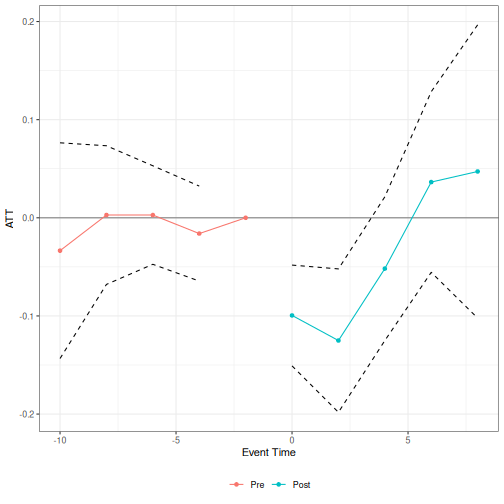

This vignette walks through the main badcontrols workflow using a small scale version of the application in Caetano et al. (2026) that considers the effect of job displacement on earnings treating a worker’s occupation score as the bad control.
NLSY data
nlsy_job_displacement is a balanced panel of NLSY79 respondents observed biennially from 1992 to 2002. log_earnings is the outcome, occ_score is the bad control (it can change when a respondent changes occupation), and group gives each respondent’s displacement year (0 for never displaced).
library(badcontrols)
library(ptetools)
data(nlsy_job_displacement)
head(nlsy_job_displacement)
#> id year log_earnings occ_score group race female
#> <int> <int> <num> <num> <int> <char> <lgcl>
#> 1: 8 1992 9.798127 2.040221 0 non_black_non_hispanic TRUE
#> 2: 8 1994 9.928180 2.748872 0 non_black_non_hispanic TRUE
#> 3: 8 1996 10.085809 2.748872 0 non_black_non_hispanic TRUE
#> 4: 8 1998 9.998798 2.748872 0 non_black_non_hispanic TRUE
#> 5: 8 2000 10.218298 2.748872 0 non_black_non_hispanic TRUE
#> 6: 8 2002 10.357743 2.358675 0 non_black_non_hispanic TRUE
#> educ_max_grade
#> <int>
#> 1: 14
#> 2: 14
#> 3: 14
#> 4: 14
#> 5: 14
#> 6: 14
table(nlsy_job_displacement$group[!duplicated(nlsy_job_displacement$id)])
#>
#> 0 1994 1996 1998 2000 2002
#> 2483 209 155 113 103 168Question 1: Is occupation score a bad control?
Before treating occ_score as a bad control, it’s worth checking directly whether displacement actually affects it. We can do this with the same group-time ATT machinery that didbc() builds on (ptetools::pte_default()), just using occ_score as the outcome instead of earnings.
occ_score_check <- pte_default(
yname = "occ_score",
gname = "group",
tname = "year",
idname = "id",
data = nlsy_job_displacement,
xformula = ~ race + female + educ_max_grade,
d_outcome = FALSE,
lagged_outcome_cov = TRUE,
est_method = "reg",
control_group = "notyettreated",
base_period = "universal",
bstrap = FALSE
)
summary(occ_score_check)
#>
#> Overall ATT:
#> ATT Std. Error [ 95% Conf. Int.]
#> -0.033 0.0093 -0.0512 -0.0148 *
#>
#>
#> Dynamic Effects:
#> Event Time Estimate Std. Error [95% Pointwise Conf. Band]
#> -10 -0.0210 0.0218 -0.0638 0.0218
#> -8 -0.0218 0.0169 -0.0549 0.0114
#> -6 0.0015 0.0146 -0.0272 0.0301
#> -4 -0.0266 0.0127 -0.0514 -0.0018 *
#> -2 0.0000 NA NA NA
#> 0 -0.0398 0.0109 -0.0612 -0.0185 *
#> 2 -0.0290 0.0119 -0.0523 -0.0057 *
#> 4 -0.0070 0.0147 -0.0358 0.0218
#> 6 -0.0198 0.0167 -0.0525 0.0129
#> 8 -0.0138 0.0201 -0.0533 0.0257
#> ---
#> Signif. codes: `*' confidence band does not cover 0The results here indicate that job displacement reduces the occupation score, especially in the period right after job displacement occurs.
Estimating the effect of displacement on earnings
didbc()’s main arguments mirror did::att_gt()/ptetools::pte_default(), plus a few bad-control-specific ones: bad_control_formula (the bad control itself, occ_score), bad_control_cov_formula (the covariate(s) used to model its untreated evolution, W; here the outcome itself, as in the paper’s application), and xformula (the other covariates, Z).
Next, we provide estimates of the effect of job displacement on earnings with occupation score treated as a bad control. We use the imputation version of our estimator (est_method = "imputation").
res_imputation <- didbc(
yname = "log_earnings",
gname = "group",
tname = "year",
idname = "id",
data = nlsy_job_displacement,
bad_control_formula = ~occ_score,
bad_control_cov_formula = ~log_earnings,
xformula = ~ race + female + educ_max_grade,
est_method = "imputation",
control_group = "notyettreated",
base_period = "universal",
bstrap = FALSE
)
summary(res_imputation)
#>
#> Overall ATT:
#> ATT Std. Error [ 95% Conf. Int.]
#> -0.0672 0.0242 -0.1146 -0.0199 *
#>
#>
#> Dynamic Effects:
#> Event Time Estimate Std. Error [95% Pointwise Conf. Band]
#> -10 -0.0335 0.0561 -0.1434 0.0764
#> -8 0.0028 0.0360 -0.0679 0.0734
#> -6 0.0028 0.0256 -0.0474 0.0530
#> -4 -0.0161 0.0247 -0.0645 0.0323
#> -2 0.0000 NA NA NA
#> 0 -0.0995 0.0262 -0.1509 -0.0482 *
#> 2 -0.1251 0.0373 -0.1982 -0.0521 *
#> 4 -0.0518 0.0374 -0.1251 0.0214
#> 6 0.0364 0.0470 -0.0556 0.1285
#> 8 0.0472 0.0762 -0.1022 0.1966
#> ---
#> Signif. codes: `*' confidence band does not cover 0didbc() returns event studies alongside the overall ATT, which are plotted below.
plot(res_imputation)
Other estimators
The same call works for the doubly robust and machine-learning estimators (est_method = "dr_ml"). Only the relevant arguments change:
# Doubly robust, parametric (OLS/logit) nuisance functions
didbc(
yname = "log_earnings",
gname = "group",
tname = "year",
idname = "id",
data = nlsy_job_displacement,
bad_control_formula = ~occ_score,
bad_control_cov_formula = ~log_earnings,
xformula = ~ race + female + educ_max_grade,
est_method = "dr_ml",
nuisance_method = "parametric",
control_group = "notyettreated",
base_period = "universal",
bstrap = FALSE
)
# Doubly robust, cross-fitted machine-learning (grf) nuisance functions
didbc(
yname = "log_earnings",
gname = "group",
tname = "year",
idname = "id",
data = nlsy_job_displacement,
bad_control_formula = ~occ_score,
bad_control_cov_formula = ~log_earnings,
xformula = ~ race + female + educ_max_grade,
est_method = "dr_ml",
nuisance_method = "ml",
control_group = "notyettreated",
base_period = "universal",
bstrap = FALSE
)Finally, instead of covariate unconfoundedness, didbc() also supports assuming parallel trends for the bad control itself (bad_control_identification_strategy = "did"). Since this approach requires an additional linearity condition, it is only available for est_method = "imputation", and still uses bad_control_cov_formula (W) if supplied:
didbc(
yname = "log_earnings",
gname = "group",
tname = "year",
idname = "id",
data = nlsy_job_displacement,
bad_control_formula = ~occ_score,
bad_control_cov_formula = ~log_earnings,
xformula = ~ race + female + educ_max_grade,
est_method = "imputation",
bad_control_identification_strategy = "did",
control_group = "notyettreated",
base_period = "universal",
bstrap = FALSE
)